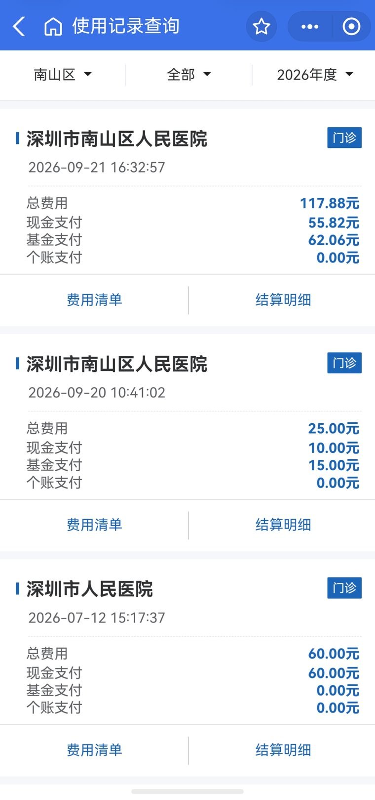
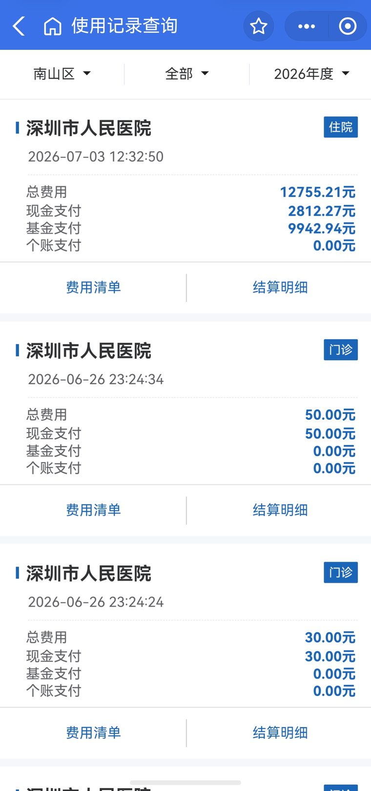
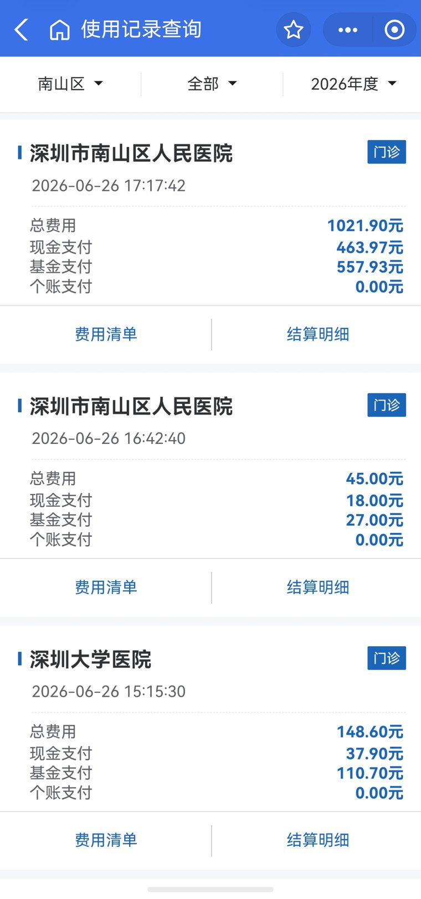
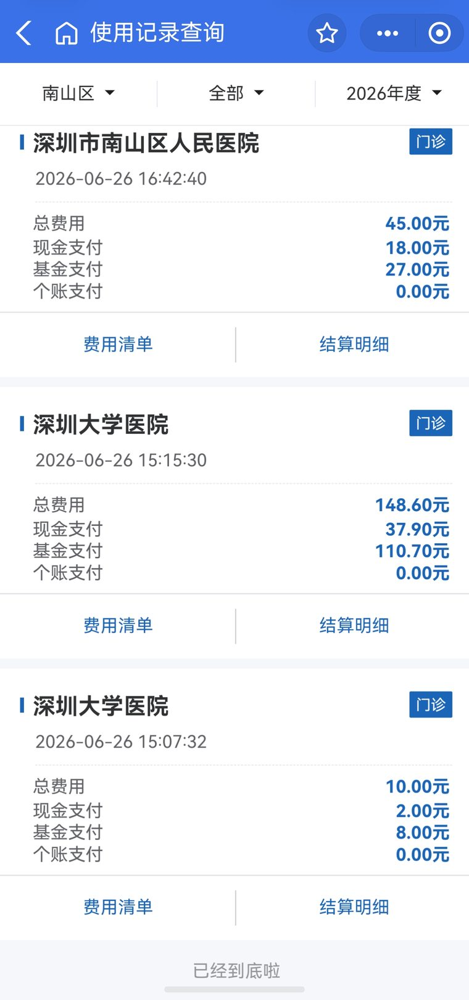
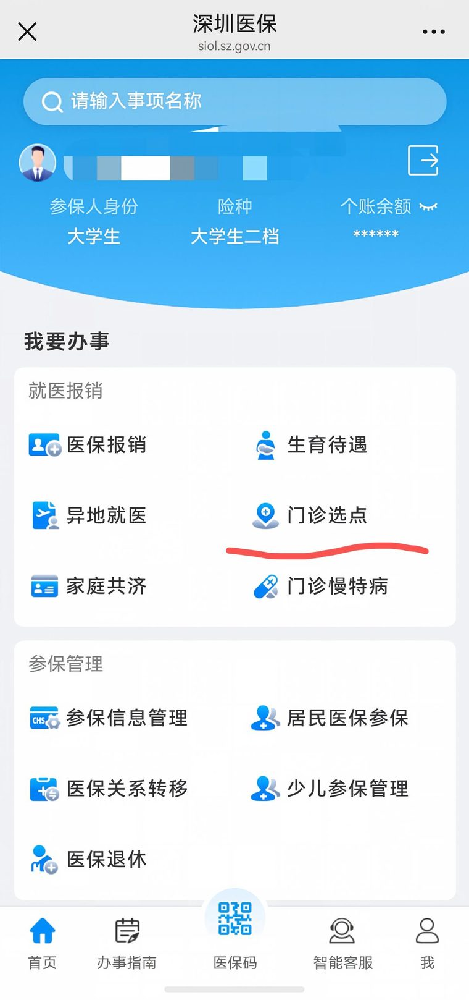
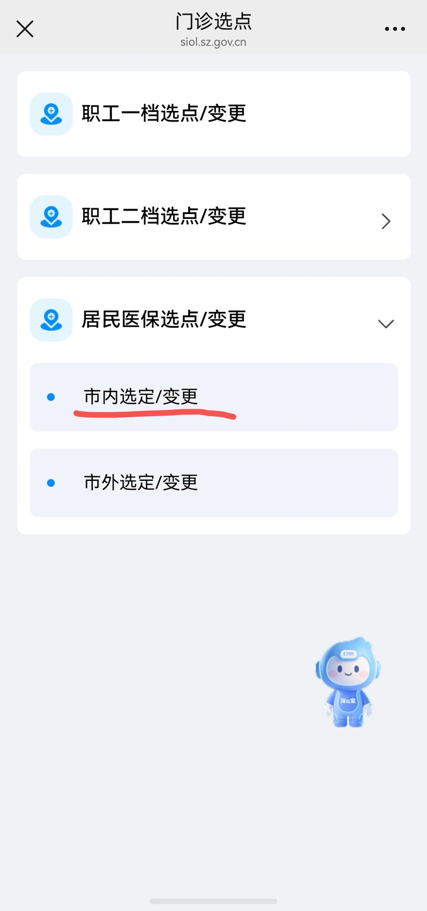
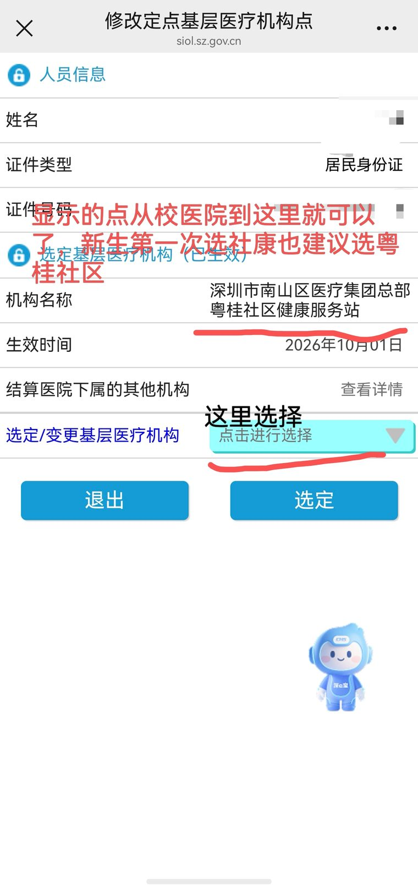

粤海校区学生医保使用
默认绑定的社康，把门诊报销锁在了一小时车程外的丽湖。改一个设置，门口就能报。
先看结论
- 大学生二档医保的门诊待遇绑在「选定的社康」上。选哪家社康，决定了你在哪些医院门诊能报销、按什么比例报。
- 深圳的门诊报销按医院级别递减：社康等一级以下机构 75%，二级医院 65%，三级医院 55%。
- 选定一家社康后，该社康的上级结算医院自动纳入选定范围。在这家结算医院看病，直接按医院级别报销，不需要转诊。
- 学校默认把社康绑在校医院。校医院隶属丽湖的深圳大学总医院，所以门诊检查要报，得跑到丽湖去——从粤海过去约一小时。
- 改绑到粤桂社区健康服务站（南山人民医院下属），在南山医院门诊就能按三级医院 55% 左右报销，走路就到。
- 去没有绑定关系的三甲医院门诊（如市人民医院），全额自费。
报销比例怎么算
深圳二档医保的普通门诊统筹，比例跟医疗机构的级别挂钩，越往基层报得越多。退休人员和 60 岁以上居民再提高 5 个百分点。
| 就诊机构 | 门诊报销 | 说明 |
|---|---|---|
| 一级以下医疗机构 （社康、校医院等） |
75% | 选定社康直接就医，无需转诊 |
| 二级医院 | 65% | 需是选定社康的上级结算医院 |
| 三级医院 | 55% | 需是选定社康的上级结算医院 |
| 无绑定关系的三甲 | 0% | 全额自费，除非经社康转诊 |
| 住院 | 90%–92% | 一级 92%、二级 91%、三级 90%，不受社康绑定限制 |
另外，二档医保的普通门诊统筹有年度支付限额，2026 年度约 2655.9 元，用完自付。金额每年调整，可在「深圳医保」里查当年的剩余额度。
默认绑定的坑在哪儿
新生入学时，学校会把医保统一绑在校医院。听起来合理——校医院就在校内，但它背后的结算医院不在粤海。
- 深圳大学校医院隶属丽湖校区的深圳大学总医院。
- 绑校医院，等于把深大总医院选成了结算医院。门诊检查要报销，只能去丽湖总医院。
- 粤海校区到丽湖，路上大约一小时。急重症的门诊检查、日常门诊检查，跑一趟成本都很高。
- 而校医院本身能做的检查有限，稍微复杂一点的项目还是要往外送。
所以真正的选择不是「校医院还是社康」，而是结算医院选丽湖还是选南山。粤海校区离南山人民医院近得多，改绑粤桂更实用。
真实账单对照
下面是一个学年的实际结算记录，同一时期、不同医院，报销结果差别很大：
| 日期 | 医院 | 总费用 | 医保支付 | 自付 | 报销 |
|---|---|---|---|---|---|
| 06-26 | 深圳大学医院 · 门诊 | 148.60 | 110.70 | 37.90 | 75% |
| 06-26 | 南山人民医院 · 门诊 校医院转诊 |
45.00 | 27.00 | 18.00 | 60% |
| 06-26 | 南山人民医院 · 门诊 校医院转诊 |
1021.90 | 557.93 | 463.97 | 55% |
| 06-26 | 市人民医院 · 门诊 | 60.00 | 0.00 | 60.00 | 0% |
| 07-03 | 市人民医院 · 住院 | 12755.21 | 9942.94 | 2812.27 | 78% |
| 09-21 | 南山人民医院 · 门诊 改绑粤桂后 |
117.88 | 62.06 | 55.82 | 53% |
同样是三甲医院门诊，有绑定或转诊关系的南山人民医院能报一半以上，没有绑定关系的市人民医院一分不报。
注意 06-26 和 09-21 的区别：前者是经校医院转诊去的，后者是改绑粤桂之后直接去的。两者报销比例差不多（都是三级医院 55% 上下），差别在手续——转诊每次都要先跑校医院办，绑定之后直接去就行。
账单里的实际报销略高于或略低于 55%，是因为不同项目（甲类、乙类药品和诊疗项目）自付比例不同，属于正常浮动。
住院为什么只报了 78%
三级医院住院的报销比例是 90%，但计算基数不是总费用。这笔 12755.21 元是这么算出来的：
| 项目 | 金额（元） |
|---|---|
| 住院总费用 | 12755.21 |
| 减：三级医院起付线（不报） | −600.00 |
| 减：目录外自费药品与耗材（不报） | −1107.50 |
| 可报销费用 | 11047.71 |
| × 报销比例 90% | 9942.94 |
自付 = 起付线 600 + 目录外 1107.50 + 可报部分的 10%（1104.77）= 2812.27 元，和账单完全一致。




怎么把社康改到粤桂
全程在「深圳医保」公众号里完成，不需要跑窗口。
- 在「我要办事」里找到门诊选点。 深圳医保 → 掌上办事 → 就医报销 → 门诊选点
- 选择居民医保选点 / 变更，再点市内选定 / 变更。
- 在机构列表里选深圳市南山区医疗集团总部粤桂社区健康服务站。
- 点「选定」提交。页面会显示生效时间，生效后门诊即可按比例报销。



校医院怎么用
改社康不影响你去校医院看病，但会影响挂号费怎么报。这两件事要分开看：
- 拿药免费，跟社康无关。无论有没有选定社康、有没有深圳医保，校医院拿药都免费。这是学校给学生的待遇，不占用医保额度，改绑也不影响。
- 挂号费的报销，跟着社康走。社康绑在校医院时，校医院挂号费 10 元，医保报 8 元，自己出 2 元。改绑到粤桂之后，去校医院挂号就不再享受这笔报销，10 元全额自费；但在粤桂社康看门诊按 75% 报销，去南山人民医院按 55% 报销。
- 检查项目也跟社康走。社康不在校医院的话，在校医院做检查要全额付款——能做的项目也不多，基本就是 B 超这类。所以需要走社康报销时，建议直接去粤桂社区，距离很近。
- 其他社康是另一套算法。深圳社康统一执行 10 元/次的一般诊疗费，把挂号、诊查、注射打包在一起收，医保按 75% 左右报销（约 7.5 元），退休和 60 岁以上居民报 8 元。
- 社康在粤海校医院的话，急重症要先到校医院转一圈办转诊，南山医院的门诊和入院前检查才能报销；不转诊就只能跑到很远的丽湖去。社康在粤桂社区的话，可以直接到南山医院挂门诊检查，省掉这道手续，校医院的医生也都建议转过去。
挂号费到底怎么收
社康和医院的收费方式不一样，差得还不少：
| 就诊机构 | 诊查费 | 医保报销 | 自己出 |
|---|---|---|---|
| 校医院 | 10 元 | 8 元（80%） | 2 元 |
| 其他社康 | 10 元 | 7.5 元（75%） | 2.5 元 |
| 一级医院 | 22 元 | 17.6 元 | 4.4 元 |
| 二级医院 | 22 元 | 15.4 元 | 6.6 元 |
| 三级医院 | 25 元 | 15 元 | 10 元 |
校医院和社康收的都是 10 元的「一般诊疗费」，把挂号、普通门诊诊查、注射打包成一次收费，比医院的诊查费便宜一半以上。两者报销略有差别：校医院报 8 元，其他社康报 7.5 元。
医院这边按级别收费。三级医院普通门诊诊查费 25 元、医保报 15 元，自己正好出 10 元——平时说的「挂号 10 元」指的就是这个。
注意：医院这笔 15 元左右的报销，前提是这家医院在你的选定范围内（即选定社康的上级结算医院），或者走了转诊。没有绑定关系的医院，诊查费也要自己全出。
近视验光
- 600 度以下：不需要散瞳，直接上验光机验，几分钟出结果。
- 600 度以上：可能需要散瞳，散瞳后要等 1–2 小时，安排时间时留出余量。
- 挂南山医院最普通的眼科号就行。挂号费 10 元，不用挑专家。散瞳验光原价 117.88 元（就是账单里 09-21 那笔），社康改到粤桂之后能报 55% 左右。
- 如果是为了开体测免测证明，记得同时让医生出具诊断书并写明避免剧烈运动。
常见问题
改了社康，校医院还能去吗？
能，而且拿药依然免费。校医院的学生拿药待遇跟医保选点无关，改了社康不影响。
为什么我在南山医院门诊只报了 55%，不是 75%？
75% 是一级以下机构（社康）的比例。南山人民医院是三级医院，按 55% 报。想拿 75%，在粤桂社康本身看病即可。
没转诊去南山医院做个 CT 要多少钱？
没改社康的话全额自费，一千元左右。改绑粤桂后按三级医院比例报销，自己承担的部分少一半以上。
门诊报销有上限吗？
有。二档医保普通门诊统筹有年度支付限额，2026 年度约 2655.9 元，用完就要自付。额度每年调整。
怎么查自己的报销记录？
「深圳医保」→ 使用记录查询，可以看到每笔费用的总费用、医保支付和现金支付明细，本文的账单就是从那里导出的。